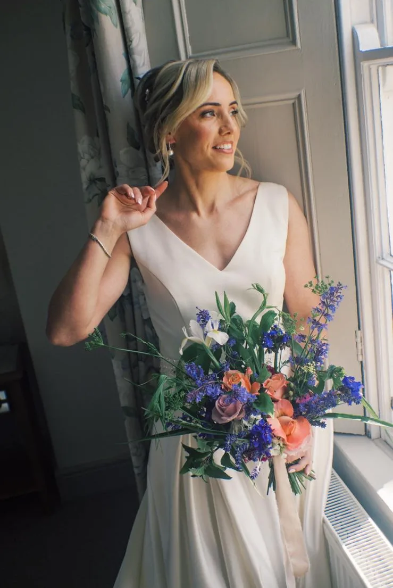
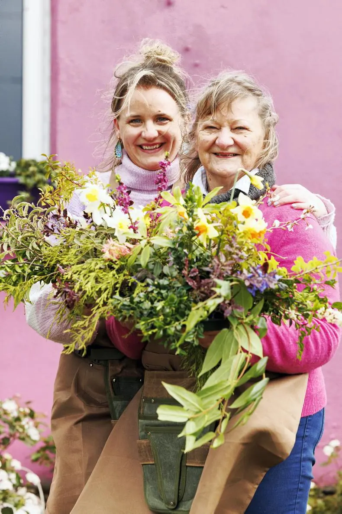
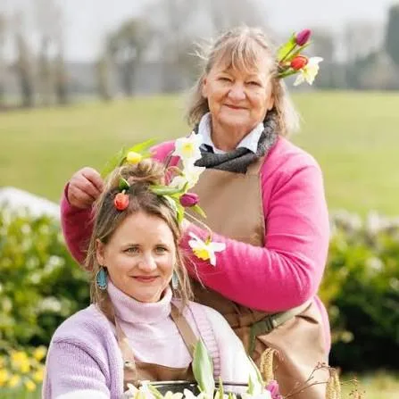
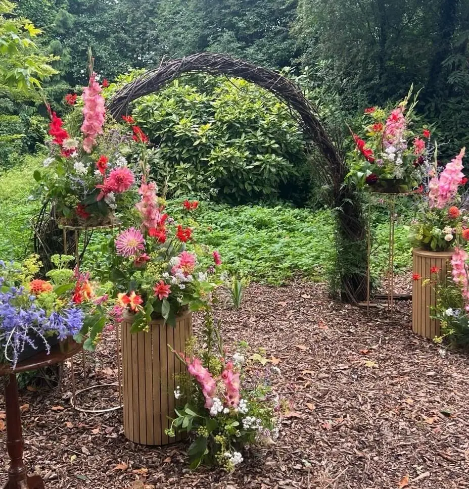
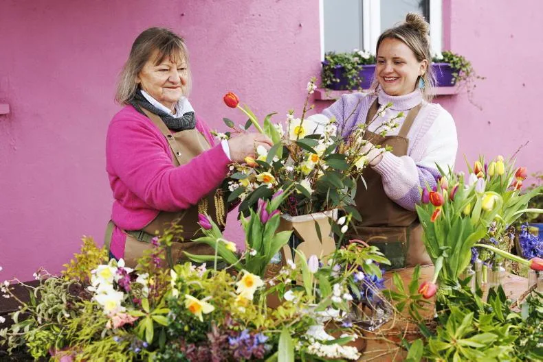

Bridal bouquets & buttonholes
Garden-gathered, light to carry and just a little wild, with buttonholes to match. Bouquets for mothers and grandmothers too.
Ask about bouquetsGrown without chemicals on our two-acre flower farm in Clonakenny, Co. Tipperary. A small number of weddings each season, picked, arranged and delivered by the mother-and-daughter team who grew them.
2026 diary closed · a limited number of 2027 & 2028 dates
Not a photo. This dahlia is drawn live, petal by petal, on the golden-angle spiral a real flower head grows on.
Liz sows, propagates and grows. Her daughter Ali picks, arranges and runs the show. It started in the first lockdown of March 2020, when Ali, then head chef at Cloughjordan House, was at home with her third baby. They planted flowers, and never stopped.
Today it's two acres of meadow and raised beds in the middle of our Tipperary village, grown without chemicals and arranged without floral foam, just chicken wire and moss. Every stem travels zero air miles from our field to your day.

Ours is the third trade on this ground.
We arrange in the purple studio, a converted horse stable. Liz's own mother farmed flowers before us, and Ali's daughter already presses the wedding keepsakes. Three generations, and counting.

Everything for the day is grown on our farm and arranged by us, for a small number of weddings each season, March to October. Priced by enquiry.

Garden-gathered, light to carry and just a little wild, with buttonholes to match. Bouquets for mothers and grandmothers too.
Ask about bouquets
Woven arches, altar pieces and ceremony flowers, dressed with whatever is at its best the week you marry.
Ask about arches“Ali made beautiful bouquets and button holes and our table flowers were so amazing.”
Centrepieces and table flowers for long banquet halls, glasshouses and weddings at home in the woods.
Ask about tables
Ali on site on the morning to place and style it all, so you don't have to think about flowers again.
Ask about stylingYou'll find our flowers most often at Kinnitty, Ashley Park and Cloughjordan House.
Weddings, posies and the odd bee, from the farm and the days it grew for.
Everything is grown here, so your date decides your flowers.
January to February
Liz sows and propagates under the polytunnels. The best time to book a summer date.
March to May
Tulips, narcissi and blossom for the first weddings of the season.
June to July
Peonies, sweet william and sweet peas: soft, scented and just a little wild.
August to October
Dahlias at their peak, with astilbe, gladioli and cornflowers, from rust and amber to pink and lilac.
November to December
Dried flowers from the farm and foraged greenery, for winter tables and Christmas arrangements.
Featured in the Irish Farmers Journal, and named among The Gloss's Best Flower Farms To Visit In Ireland.
Read them on Google“Ali provided the most stunning flowers for our wedding. The bouquets were truly beautiful, far beyond what I ever could have imagined, and they smelled incredible. I’ve loved being able to tell everyone they were grown locally.”
“The altarpiece, bouquets, and buttonholes were all stunning and everyone was complimenting them throughout the day. Alison's attention to detail is second to none.”
“Ali listened to what my ‘vision’ was and came up with something even more beautiful than I imagined. My bridal bouquet was exquisite and so light.”
“Working with Ali from Clonakenny Farm for our woodland wedding at home was an absolute dream. From start to finish, Ali was an absolute pleasure to deal with.”
“Ali worked absolute magic with our wedding flowers! Aside from the arch and bouquet being beyond beautiful, she was great to work with: quick to respond, very reasonably priced, and day of set up was so fast!”
“Ali and Liz designed beautiful flower arrangements for my wedding this year. The whole process was extremely easy and Ali was so lovely to work with.”
“We wanted something classy but also a little ‘undone and relaxed’ for our at-home wedding and Ali listened throughout.”
“Working with Ali was one of the highlights of our wedding day! She brought our vision, and more, to life.”
1 / 8
“They were exactly what I had in mind (including the bluebells!). I really appreciate the care and time you put into them and being so communicative too.”
Jessica Horgan, Google“Supplied the flowers for our wedding in Cloughjordan House, Tipperary in February! From the very first consultation, their passion and expertise shone through.”
Rebecca O Donovan, Google“The bouquets, buttonholes and arrangements were all spectacular.”
Neil Andrews, Google“Ali took my 100+ suggestions and was able to create something that was way above…”
Shauna Connolly, Google“The flowers were absolutely out of this world! From the bouquets to decorating an arch for us! I was genuinely blown away with them!”
Hannah Bayford, Google“Her flowers for our wedding were just flawless. I got so many compliments on just how beautiful Ali's flowers were.”
Sarah J Noone, Google“Absolutely stunning wild flowers. Ali did the most amazing bouquets and button holes for our wedding, along with providing all the flowers for our table arrangements.”
Clodagh Louise Lehane, Google“Always at end of phone when we had a question … beautiful bouquets for our mothers and grandmothers.”
Padraic Kennedy, weddingsonline.ie“Ali is super easy to work with and puts her heart into her work.”
Amy Bermingham, Google“Ali asked for a photo of the location I wanted to put it in so that she could make something perfect for us, and perfect it was!”
Jillian Cronin, Google, on a Christmas arrangementThe 2026 diary is closed. We keep the diary small on purpose, with a limited number of 2027 & 2028 dates. Wedding flowers are priced by enquiry.
Pick what fits and your email writes itself. Nothing is sent from this page.
The Instagram DMs are the quickest way to reach Ali: @clonakenny_flower_farm. Not a wedding? Ali makes bouquets, gifts and Christmas arrangements too. Just ask.
Please get in touch before calling out, so someone's there to meet you.
Get directionsA member of The Flower Farmers of Ireland.